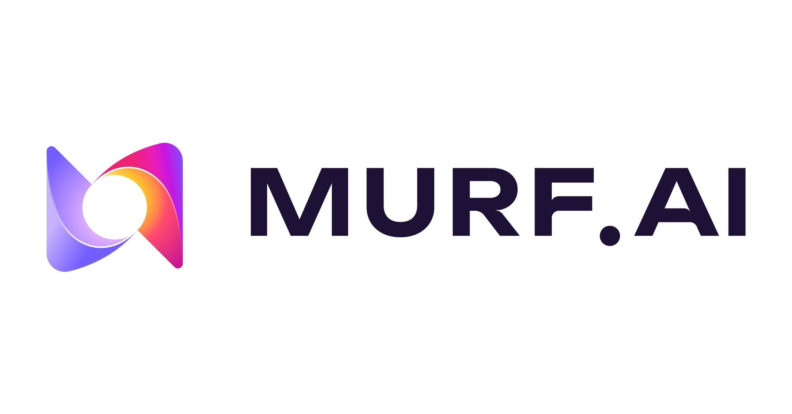
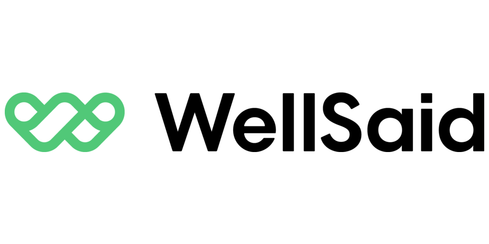
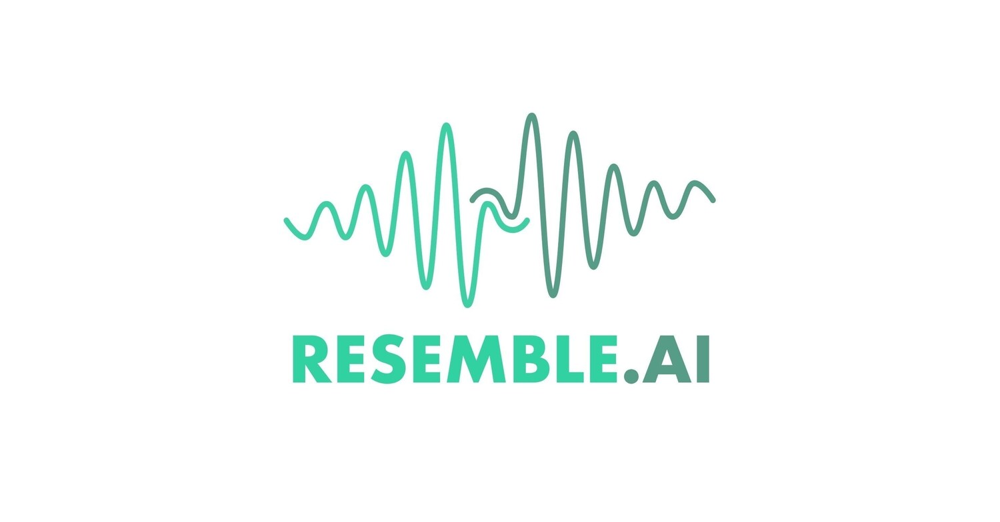
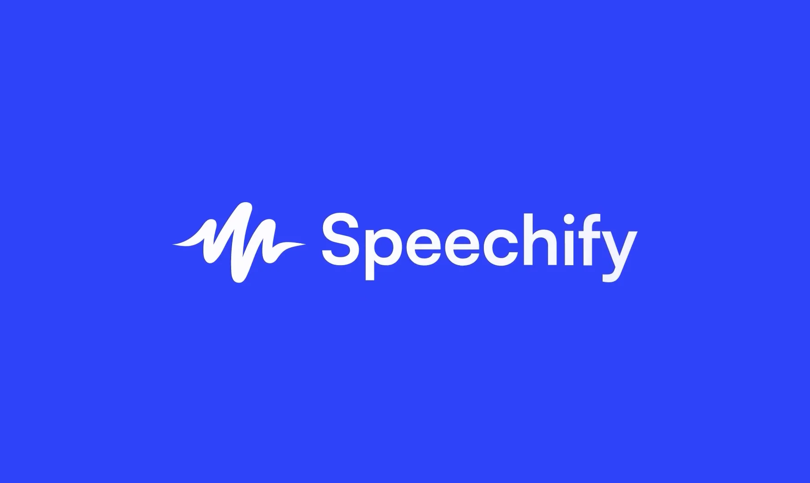

Audio generator tools are a type of artificial intelligence (AI) that can create sound, speech, or music automatically. Instead of recording audio using a microphone or instruments, users can simply type text or give instructions, and the AI will generate audio in seconds.
These tools are widely used today for voiceovers, podcasts, music creation, audiobooks, and even virtual assistants. As the technology improves, AI-generated audio is becoming more realistic, making it harder to tell whether a voice is real or created by AI.
How Audio Generator Tools Work
Audio generator tools are trained using large collections of voice recordings, music, and sound effects. They learn how humans speak, including tone, emotion, rhythm, and pronunciation.
When a user inputs text or a prompt, the AI converts it into audio by:
- Generating speech (text-to-speech)
- Cloning voices from samples
- Creating music or sound effects
- Adjusting tone, speed, and emotion
Modern AI audio tools can produce voices that sound almost identical to real humans. In fact, studies show that people can only correctly identify AI voices about half the time, meaning they are often mistaken as real.
Common Features of Audio Generator Tools
Most audio generator tools include:
-
1
Text-to-speech (TTS)
Convert written text into spoken audio
-
2
Voice cloning
Copy a person’s voice using a short sample
-
3
Emotion control
Adjust tone, pitch, and feeling of the voice
-
4
Multilingual support
Generate audio in different languages
-
5
Music and sound generation
Create background music or effects
These features make audio tools useful for both personal and professional use.
Top Popular AI Audio Generator Tools
1. ElevenLabs

ElevenLabs is considered one of the most advanced and popular AI audio generators today. It is widely known for producing extremely realistic human-like voices that are difficult to distinguish from real recordings.
One of its strongest features is voice cloning. Users can upload a short voice sample, and the AI can recreate that voice with high accuracy, including tone, accent, and emotion. It also supports many languages and allows users to adjust how the voice sounds using controls for stability and emotion.
Because of its high quality, ElevenLabs is often used for audiobooks, podcasts, video narration, and professional content. Many companies and creators rely on it for realistic voice generation.
2. Murf AI

Murf AI is a popular audio generator designed for business and professional use. It offers a simple interface where users can create voiceovers quickly without needing technical skills.
It includes over 200 voices in different languages and accents, making it suitable for global content. Users can also edit scripts, adjust timing, and match voiceovers with visuals.
Another useful feature is the ability to define starting and ending frames, which helps guide how the video begins and finishes. This makes Kling AI especially useful for storytelling and controlled video creation.
Murf AI is commonly used for:
- E-learning content
- Presentations
- Marketing videos
3. Play.ht
Play.ht is another well-known AI voice generator that offers a wide range of realistic voices. It provides many voice options and supports multiple languages, making it useful for different types of users.
One of its strengths is accessibility. It offers affordable plans and allows users to download generated audio easily. It is often used for:
- Blog narration
- Audio articles
- YouTube voiceovers
4. WellSaid Labs

WellSaid Labs focuses on producing clear and professional-quality voices. It is especially popular in business and educational settings where clarity and accuracy are important.
Its voices are designed to sound natural while maintaining consistent pronunciation, making it ideal for training and corporate videos.
While it may not focus heavily on creative features like voice cloning, it excels in producing clean and reliable audio.
5. Resemble AI

Resemble AI is known for its advanced voice cloning and customization features. It allows users to create highly personalized voices and even modify them in real time. Users can:
- Clone voices quickly
- Add emotion and variation
- Create custom voice styles
This makes it useful for developers, game creators, and interactive applications. However, because of its powerful cloning features, it also raises concerns about misuse and identity imitation.
6. Speechify

Speechify is an AI audio tool that focuses on converting written content into spoken audio. It is commonly used for reading documents, articles, and books aloud.
Speechify supports different voices and speeds, making it flexible for different users. It is also available on multiple platforms, including mobile and desktop devices..
Why People Use Audio Generator Tools
People use audio generator tools because they make it easy to create high-quality audio without needing recording equipment or voice actors. These tools save time and effort, especially for content creators who need voiceovers regularly.
They are widely used in:
- Videos and social media
- Podcasts and audiobooks
- Online learning and training
- Apps and virtual assistants
Risks and Misuse
Despite their advantages, audio generator tools can also be misused.
Some risks include:
- Voice cloning without permission
- Fake audio recordings (deepfake audio)
- Scams or impersonation using AI voices
Since AI voices can sound very real, it can be difficult to tell if an audio clip is genuine or fake.
What We've Learned
Audio generator tools are powerful AI technologies that can create realistic speech, music, and sound from simple inputs. Tools like ElevenLabs, Murf AI, Play.ht, WellSaid Labs, Resemble AI, and Speechify offer different features for various uses, from professional voiceovers to everyday tasks.
While these tools are fast, easy to use, and widely accessible, they also come with risks such as voice cloning and fake audio. Because of this, it is important to stay informed and careful when listening to audio online. Understanding how these tools work can help you identify AI-generated content and avoid misinformation in today’s digital world.
AI-generated voices can be used in scams, fake announcements, or misleading recordings. Always verify the source before trusting or sharing audio content.